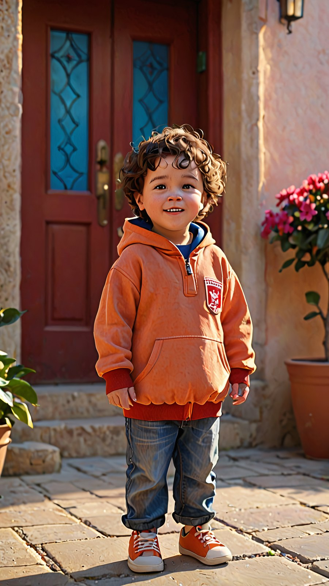
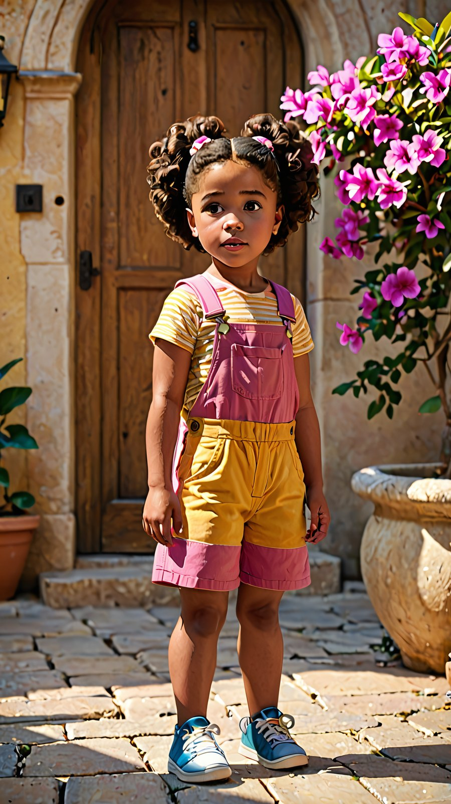
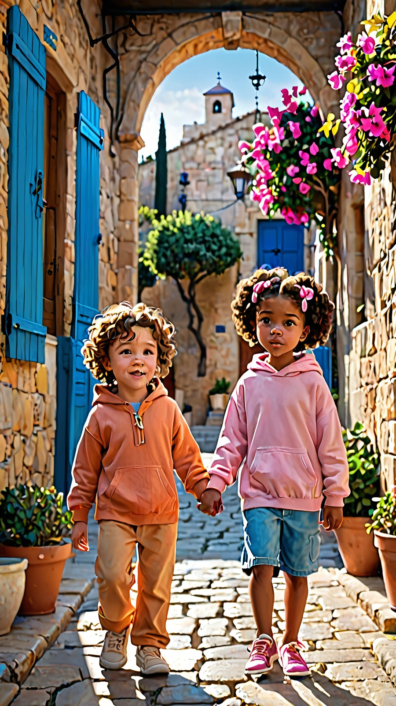
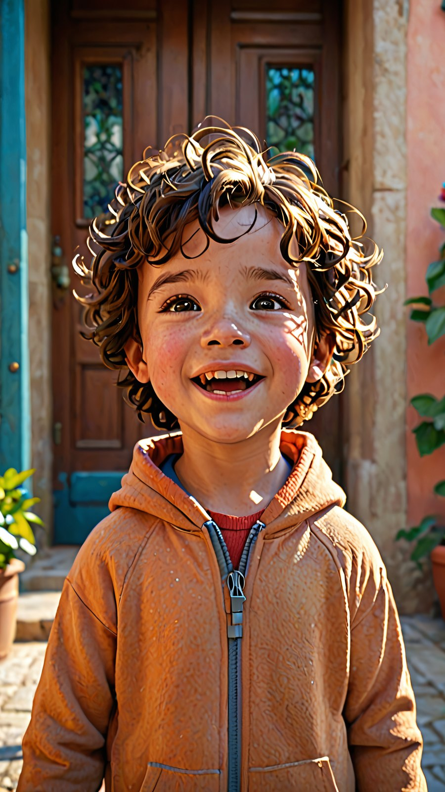
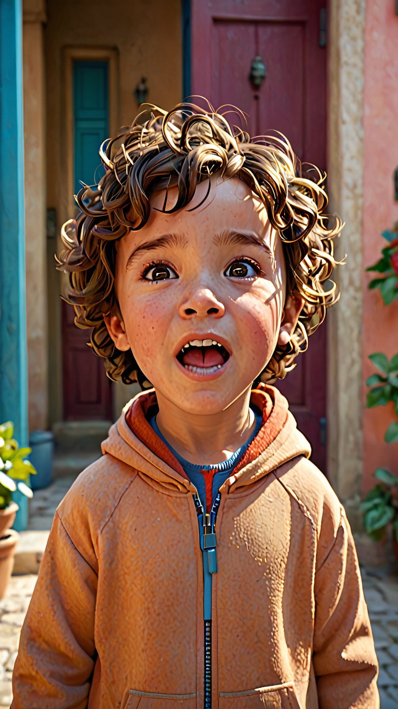
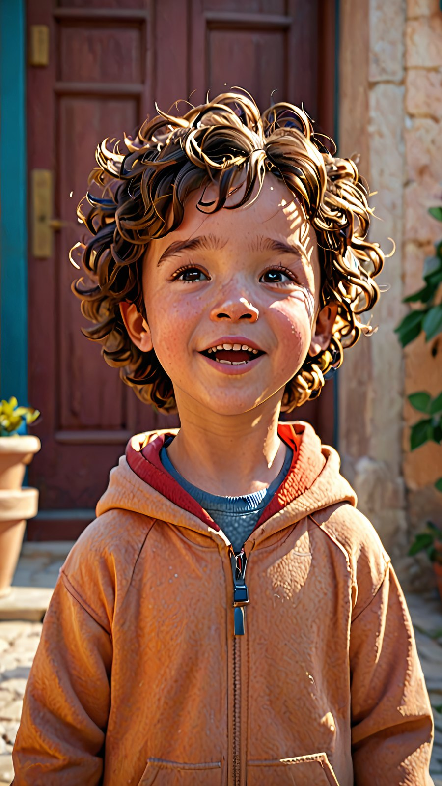
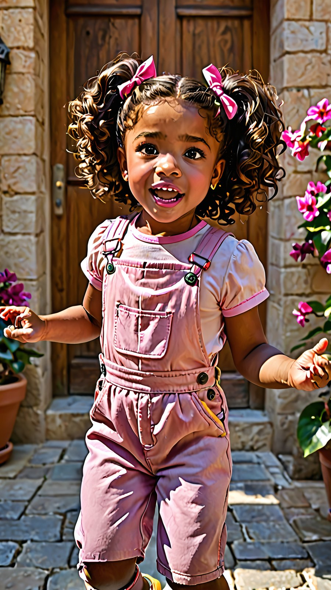
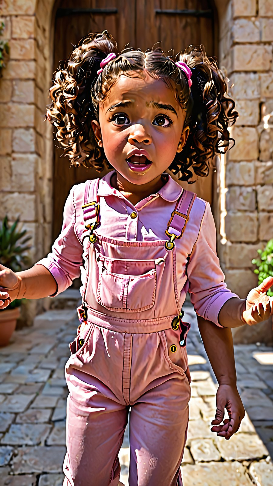
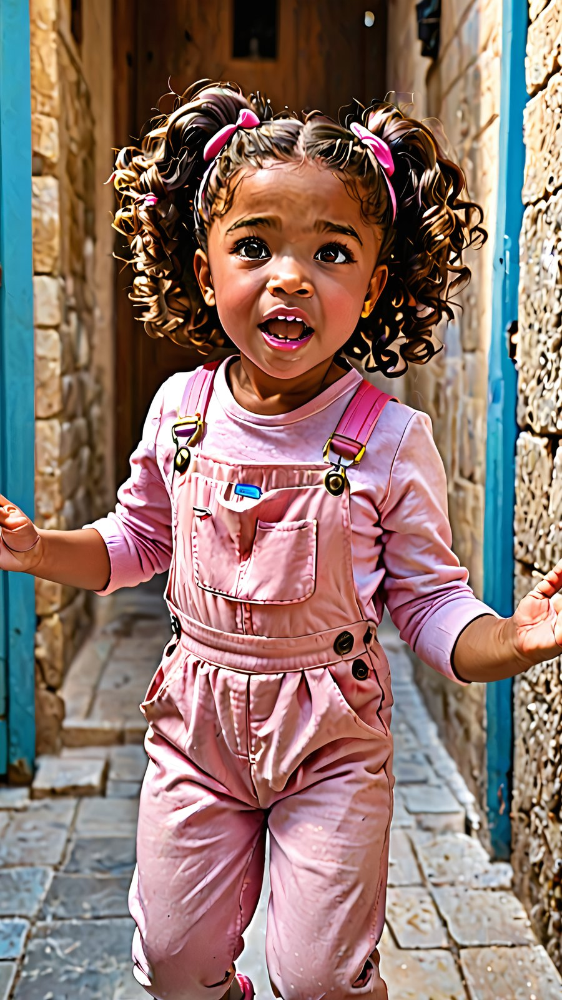

<title>נועם ותמר</title>
<meta name="claude:viewport-fit-sides" content="cover">
<link rel="preconnect" href="https://fonts.googleapis.com">
<link rel="preconnect" href="https://fonts.gstatic.com" crossorigin>
<link rel="stylesheet" href="https://fonts.googleapis.com/css2?family=Fredoka:wght@500;600;700&family=Rubik:wght@400;500&display=swap">
<style>
/* Layout: a character bible. The two heroes first, the pair, then the expression sheet. Every image links to its 4K file. */
:root {
  --bg: #F4F2EE; --surface: #FFFFFF; --fg: #1F2230; --muted: #5C6273; --line: #E0DCD3;
  --orange: #E2600E; --pink: #C8457E; --door: #2F6DB5;
  --display: "Fredoka", "Rubik", "Arial Hebrew", system-ui, sans-serif;
  --body: "Rubik", "Arial Hebrew", system-ui, sans-serif;
}
@media (prefers-color-scheme: dark) { :root:not([data-theme="light"]) {
  --bg: #121317; --surface: #1B1D24; --fg: #EEF0F4; --muted: #A4AABA; --line: #2C2F38;
  --orange: #FF8A45; --pink: #EF7FB0; --door: #7AA9EA; color-scheme: dark; } }
:root[data-theme="dark"] {
  --bg: #121317; --surface: #1B1D24; --fg: #EEF0F4; --muted: #A4AABA; --line: #2C2F38;
  --orange: #FF8A45; --pink: #EF7FB0; --door: #7AA9EA; color-scheme: dark; }

body { background: var(--bg); color: var(--fg); font-family: var(--body); font-size: 16px; line-height: 1.6; }
.wrap { max-width: 1200px; margin: 0 auto; padding-block: 36px 64px; display: grid; gap: 52px;
  padding-left: max(16px, env(safe-area-inset-left, 0px)); padding-right: max(16px, env(safe-area-inset-right, 0px)); }
h1, h2, h3 { font-family: var(--display); margin: 0; line-height: 1.12; text-wrap: balance; }
h1 { font-size: clamp(2.2rem, 6vw, 3.6rem); font-weight: 700; }
h2 { font-size: clamp(1.5rem, 3.4vw, 2.1rem); font-weight: 600; }
h3 { font-size: 1.3rem; font-weight: 600; }
p { margin: 0; }
.intro { display: grid; gap: 10px; max-width: 64ch; }
.intro p { color: var(--muted); font-size: 1.08rem; }
.chips { display: flex; flex-wrap: wrap; gap: 8px; }
.chip { font-size: .88rem; padding: 4px 12px; border-radius: 999px; border: 1px solid var(--line); background: var(--surface); font-variant-numeric: tabular-nums; }
figure { margin: 0; display: grid; gap: 8px; min-width: 0; }
figure img { display: block; width: 100%; height: auto; border-radius: 18px; background: var(--line); aspect-ratio: 9 / 16; object-fit: cover; }
figcaption { display: flex; justify-content: space-between; align-items: baseline; gap: 10px; color: var(--muted); font-size: .92rem; }
figcaption a { color: var(--door); font-weight: 500; text-decoration: none; white-space: nowrap; }
figcaption a:hover, figcaption a:focus-visible { text-decoration: underline; }
.heroes { display: grid; grid-template-columns: repeat(2, minmax(0, 1fr)); gap: 24px; }
.hero-card { display: grid; gap: 12px; }
.hero-card .who { display: flex; align-items: baseline; gap: 10px; flex-wrap: wrap; }
.noam h3 { color: var(--orange); }
.tamar h3 { color: var(--pink); }
.hero-card p { color: var(--muted); }
.pair { display: grid; grid-template-columns: minmax(0, 420px) minmax(0, 1fr); gap: 28px; align-items: center; }
.pair .copy { display: grid; gap: 10px; }
.pair .copy p { color: var(--muted); }
.section { display: grid; gap: 18px; }
.section > header { display: grid; gap: 6px; max-width: 64ch; }
.section > header p { color: var(--muted); }
.faces { display: grid; grid-template-columns: repeat(3, minmax(0, 1fr)); gap: 16px; }
.next { background: var(--surface); border: 1px solid var(--line); border-radius: 20px; padding: 22px; display: grid; gap: 12px; }
.next ul { margin: 0; padding-inline-start: 1.2em; display: grid; gap: 6px; color: var(--muted); }
.next strong { color: var(--fg); font-weight: 500; }
@media (max-width: 820px) {
  .pair { grid-template-columns: 1fr; }
  .faces { grid-template-columns: repeat(2, minmax(0, 1fr)); }
}
@media (max-width: 520px) { .heroes { grid-template-columns: 1fr; } }
</style>

<main class="wrap" dir="rtl" lang="he">
  <section class="intro">
    <h1>נועם ותמר</h1>
    <p>הדמויות שבחרת, בגרסה הסופית: ילדים בני 4 ו־5 במראה קולנועי, באור זהוב בחצר עם קיר אבן ירושלמית. כל תמונה כאן ב־4K מלא, ואפשר לפתוח אותה בגודל מלא מהקישור שמתחתיה.</p>
    <div class="chips"><span class="chip">2160×3840 · 4K אנכי</span><span class="chip">פורמט שורטס 9:16</span><span class="chip">נוצר בחינם, במחשב הזה</span></div>
  </section>

  <section class="heroes">
    <article class="hero-card noam">
      <figure><figcaption><span>התמונה שבחרת</span><a href="4k/hero_noam.jpg" target="_blank" rel="noopener">פתיחה ב־4K</a></figcaption></figure>
      <div class="who"><h3>נועם</h3><p>תלתלים חומים, קפוצ׳ון כתום עם שרוולים אדומים ובטנה כחולה, ג׳ינס ונעליים כתומות.</p></div>
    </article>
    <article class="hero-card tamar">
      <figure><figcaption><span>התמונה שבחרת</span><a href="4k/hero_tamar.jpg" target="_blank" rel="noopener">פתיחה ב־4K</a></figcaption></figure>
      <div class="who"><h3>תמר</h3><p>שתי קוקיות מתולתלות עם גומיות ורודות, אוברול ורוד־צהוב, חולצה צהובה מפוספסת ונעליים כחולות.</p></div>
    </article>
  </section>

  <section class="pair">
    <figure><figcaption><span>שניהם יחד</span><a href="4k/pair.jpg" target="_blank" rel="noopener">פתיחה ב־4K</a></figcaption></figure>
    <div class="copy">
      <h2>ביחד בחצר</h2>
      <p>כדי שכל ילד ישמור על הפנים שלו גם בתמונה משותפת, נתתי למודל את הפנים של נועם רק לחצי השמאלי של הפריים ואת הפנים של תמר רק לחצי הימני.</p>
    </div>
  </section>

  <section class="section">
    <header>
      <h2>הבעות פנים</h2>
      <p>תקריבים לפרקים: שמח, מופתע וצוחק. הפנים מהתמונה שבחרת שימשו כרפרנס לכל הבעה.</p>
    </header>
    <div class="faces">
      <figure><figcaption><span>נועם · שמח</span><a href="4k/noam_happy.jpg" target="_blank" rel="noopener">4K</a></figcaption></figure>
      <figure><figcaption><span>נועם · מופתע</span><a href="4k/noam_surprised.jpg" target="_blank" rel="noopener">4K</a></figcaption></figure>
      <figure><figcaption><span>נועם · צוחק</span><a href="4k/noam_laugh.jpg" target="_blank" rel="noopener">4K</a></figcaption></figure>
      <figure><figcaption><span>תמר · שמחה</span><a href="4k/tamar_happy.jpg" target="_blank" rel="noopener">4K</a></figcaption></figure>
      <figure><figcaption><span>תמר · מופתעת</span><a href="4k/tamar_surprised.jpg" target="_blank" rel="noopener">4K</a></figcaption></figure>
      <figure><figcaption><span>תמר · צוחקת</span><a href="4k/tamar_laugh.jpg" target="_blank" rel="noopener">4K</a></figcaption></figure>
    </div>
  </section>

  <section class="next">
    <h2>מה הלאה</h2>
    <ul>
      <li><strong>וידאו:</strong> התמונות האלה הן הרפרנס לכל כלי וידאו. בחינם אפשר להנפיש פנים ותנועות מצלמה. באיכות של הסרטון ששלחת צריך שירות וידאו בתשלום.</li>
      <li><strong>אותיות:</strong> א׳ ו־A יתווספו בעריכה ולא ייווצרו בתמונה, כי המודל משבש אותיות.</li>
      <li><strong>עקביות:</strong> כל תמונה נוצרת מחדש, ולכן פרטים קטנים כמו מספר התלתלים או הסמל על הקפוצ׳ון יכולים להשתנות מעט בין תמונות.</li>
    </ul>
  </section>
</main>
